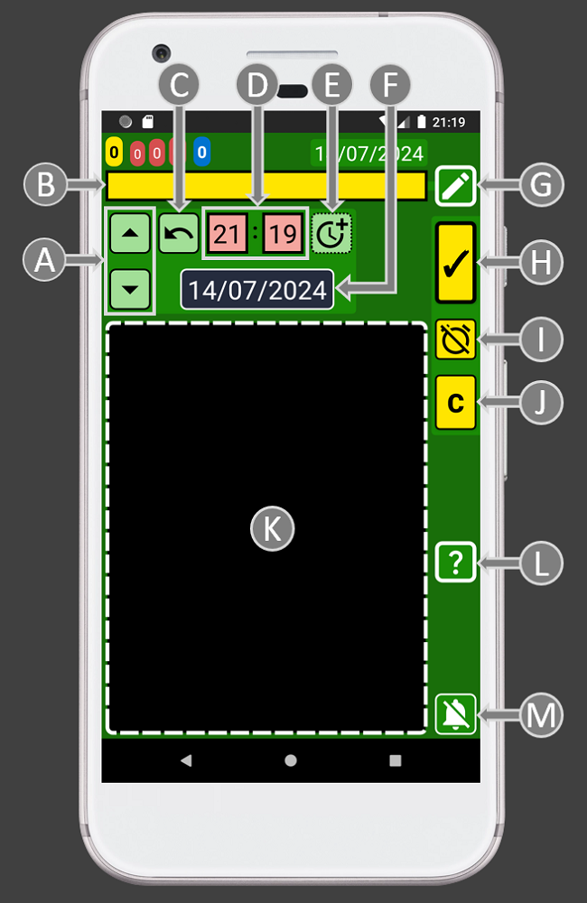
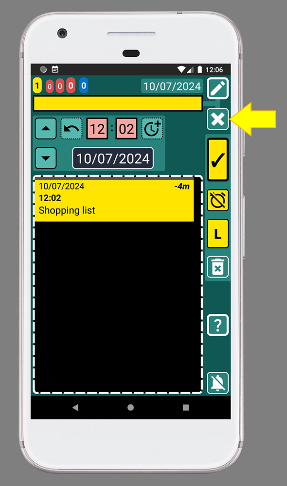
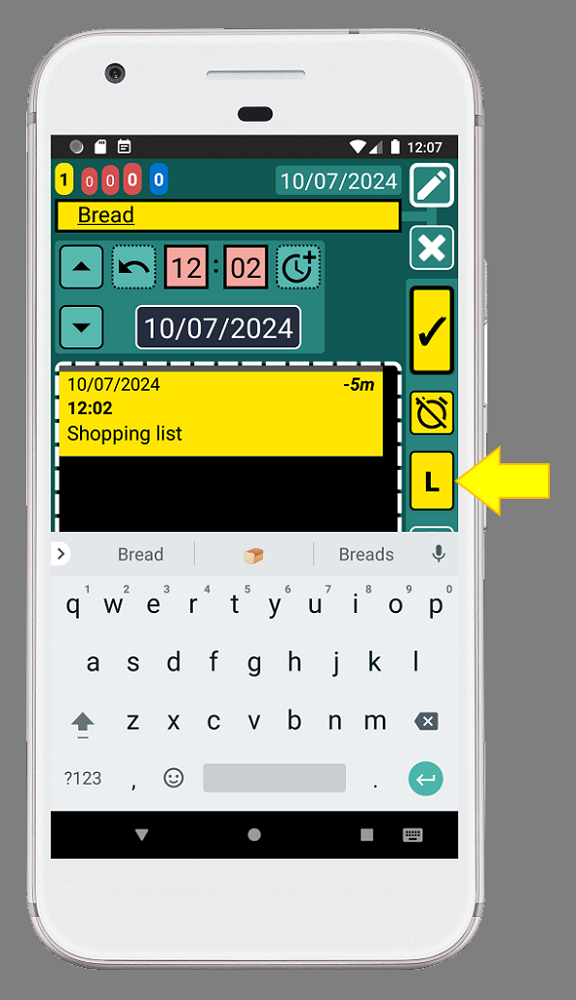

SECURElogBook also allows to create lists. Once a list is created you will be able to move and copy it.
The more you customize the Favourites menu to your needs, the easier and faster it will be to add everything.
Once you complete the list, you don't need to delete it. On the contrary, the more data the application has, the more it will help you. If you use the application to make your shopping lists, the search system will allow you to know things like:
. How often do you shopping?
. How often do you buy vegetables?
. If you add the name of the store, you can even find out where you bought that cake you liked so much!
When you finish shopping, you can add the total price to the header of the list. Then if you do the same shopping list in different shops, you will be able to see the difference in price.
1. Open SECURElogBook and go to the main window, with blue background:

2. Press the button (I), to add a new record/task.
3. Once the creator window (green background) is opened we were able to create our record/task:

The small list with all the records (K) will show only records that match or follow the moment selected by time and date (D and F).
4. You can name like you want your list, but let’s call this list “Shopping list”:

5. After adding the text “Shopping list” we can save the record, by pressing the button indicated with the yellow arrow (image above).
6. Tap on the “Shopping list” record to edit it:
7. The editor window (teal background) will display the “Shopping list” record:

By default, when we edit a record, the record we are editing will be the first one on the editor window list of records. In this case we only have one record, "Shopping list".
8. Clear the text box by pressing the button indicated with the yellow arrow:

9. Type or select from Favourites menu the item you want to add. In this case we are going to add “Bread”:

10. After adding the text "Bread", press the button with the "L" (list), indicated with the yellow arrow. This will add the item "Bread" to the list:

Every time we add an item to the list the text box will be cleared.
Notice how the record "Bread" have been added below the "Shopping list" record (image above).
11. Now type "Eggs" or select select from Favourites menu. Then press the button with the "L" (list), indicated with the yellow arrow, to add the item to the list:
12. Now type "Milk" or select select from Favourites menu. Then press the button with the "L" (list), indicated with the yellow arrow, to add the item to the list:

Note that the items in the list will be sorted alphabetically. If you want to change the order of the items, before you create the records, you can add in front of the text: 1. , 2. , 3. , ... The numbers will help you sort the list.
13. Press the back button on your phone to go back to the main window:

14. Tap on the "Shopping list" record to edit it:

Once we have a list, items are attached to the first record, in this case "Shopping list". We can use that record to move the list in time or create a copy of the entire list.
15. To complete an item from the list, to indicate that the item is already in the cart, we can HOLD on it. HOLD your finger on "Eggs". This will open the "Eggs" record:
To complete "Eggs", to indicate that we already put them in the trolley, press the button with the yellow arrow (image above).
Now, the record buttons are black, to indicate that the record/task "Eggs" is completed (in the trolley).
16. To save the record and go back, press the button indicated with the yellow arrow (image above).
Now we can see that we have "completed" the "Eggs" because now the record is black:

17. Repeat step 15 until all items in the list are black.
18. Now that everything is in the trolley, you can complete the "Shopping list" record:
Well done! You manage to create your first shopping list!
How to remove an item from the list?
To delete an item from the list, we must do it from the main window.
1. Open SECURElogBook and go to the main window, with blue background:
2. Let's remove the “Milk” record. To do it, just tap on "Milk" to edit it:
3. Then press the button indicated with the yellow arrow (image above):
The record "Milk" has been removed.
In a list, all records are linked to the main record of that list. That is the reason why you can delete the list by deleting the main record. You can also move and copy the entire list by moving or copying the main record in the list.
In the past, people spent time making shopping lists. People wasted time thinking and guessing what they needed to buy. That took a lot of time out of their lives. Many times, they forgot important things, so they had to make a second trip to the store. People even made this sacrifice a few times a week, where they burned time and money.
Now you can use SECURElogBook. It's always with you. You can create a shopping list with days in advance and add items as you remember them. Plus, you don't need to waste time guessing or thinking about what to buy. You can see what you normally buy thanks to the Favourites menu. When looking at the list, it will help you to realise if you are missing something or not.
TURBO MODE: You can simply search for shopping lists on your data and choose one that has what you need. Then, you can create a copy, Ole! Shopping list creation world record broken! üòâ Remember, you can always add or remove items from the copied list.
Tip 1: Get in the habit of adding everything you normally buy to your Favourites menu. It is not that hard üòâ It will save you a lot of time in the long run! If you do it, in no time you will be able to do your shopping list like a professional!
Tip 2: I usually create the shopping list as a yellow record. This way it will always be highlighted and easy to find. I start the process as soon as I notice that I need to buy something. Then, I create a shopping list and add the item to it. With the time I will remember that I need to buy more things, so I add them straight away. Finally, when I decide that I am going to do shopping, I give a quick look to my grocery list to double check I am not missing anything.